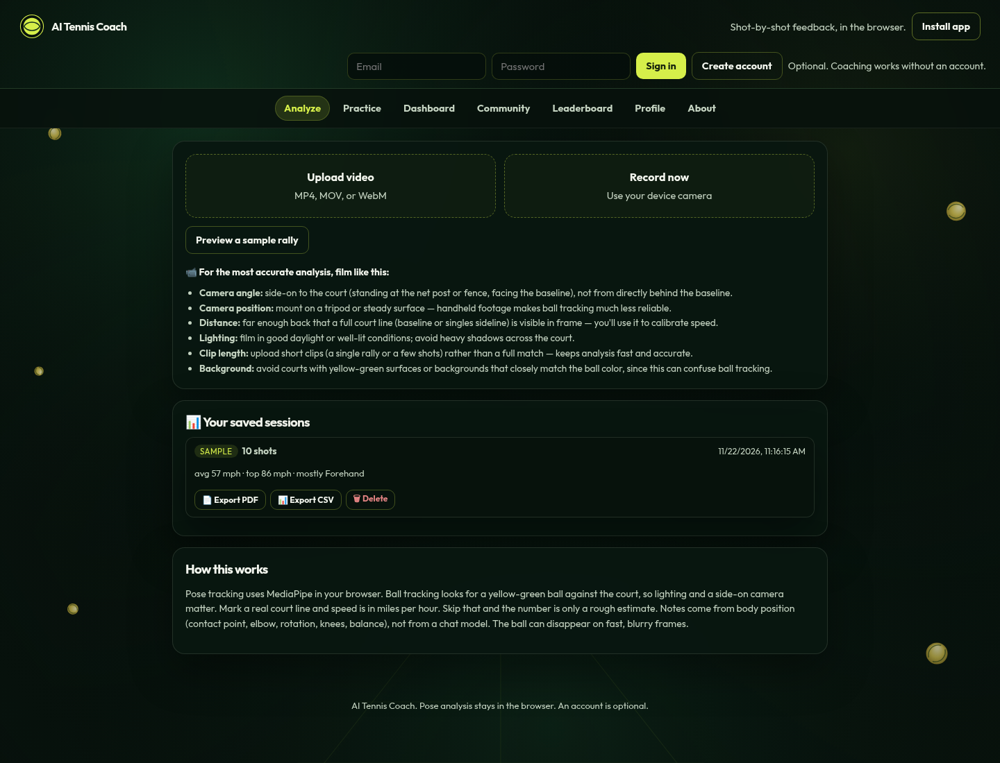

Shot by shot
Forehand, backhand, serve, and volley, plus a topspin, slice, or flat read when the ball path is clear.
Review your strokes, follow the ball, and find your next drill. Analyze a rally right in your browser.
No account required.

Forehand, backhand, serve, and volley, plus a topspin, slice, or flat read when the ball path is clear.
Average pace, consistency, and a letter for each stroke. Jump back to the frame that produced the note.
A contact map of the rally. Mark the four corners of the court if you want it lined up with the lines.
A short technique book and six drills. Check one off and it counts toward the streak on this device.
Sessions, badges, and the weekly plan live in local storage. Sign in only if you want cloud sync.
When the cloud is up, publish a session, follow players, and opt in to a speed leaderboard.
Phone on a fence or tripod, full body in frame, one court line visible. Short rallies beat full matches.
Pick a known distance — baseline, singles width, service box — and click both ends on a paused frame.
The pose skeleton and ball trail run in the browser. Nothing is uploaded unless you later choose to save it.
Take the one focus line into the drill tab. Come back and film the same angle to see if it moved.
Or open a sample rally first and see the report card before you set up a camera.
Get started